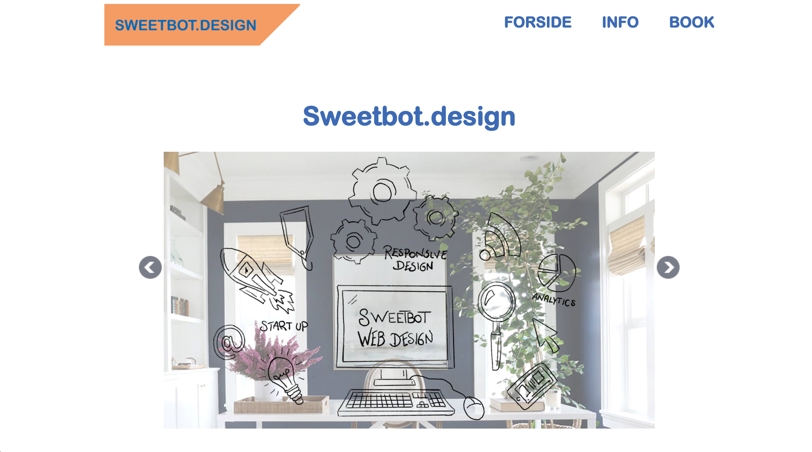
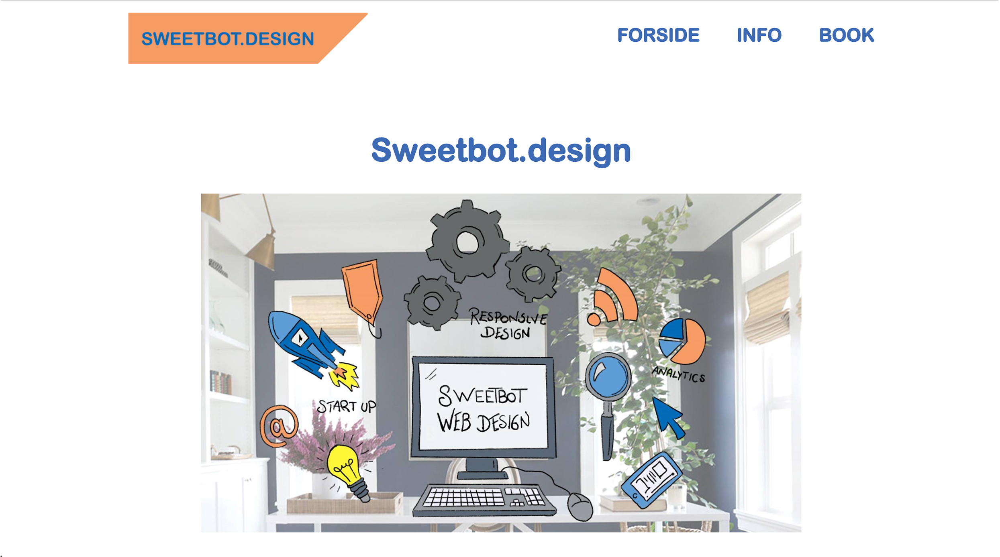

Byg Sweetbot Responsive website
Hvad har jeg lavet?
I denne opgave skulle vi lave et website til et lille fiktivt webbureau Sweetbot.design, som har specialiseret sig indenfor områderne webudvikling, digital security og branding.
Websitet skulle være responsive og der skulle indgå jQuery elementer i løsningen.
Udover den tekniske løsning, skulle vi også give et bud på visuelle elementer samt informationsarkitektur til sitet.
Sweetbot havde en styleguide, som man skulle følge samt et logo der skulle implementeres.
Udover vi skulle lave en løsning til Sweetbots website, så skulle vi også udvikle en forslagsløsning til Sweetbots e-commerce side HotBot.
HotBot manglede et logo samt ikoner. Dette skulle så demonstreres i løsningen af Sweetbots online website. Til sidst skulle der også laves en brugertest for at se, om idéforslaget var brugervenligt og imødekommende.
Læringsprocessen
Projektplanlægning er utrolig relevant i forhold til, hvordan man griber projekter an, især de større projekter.
Indenfor projektplanlægning har vi gennemgået rollefordelinger, OBS/PBS/WBS og segmentering.
Det er rigtig vigtigt for et godt gruppesamarbejde, at man har styr på, hvilke roller hvert gruppemedlem har.
Derfor lavede vi nogle personlighedsteste for at finde ud af, hvilke roller der passer til hvert enkelte person.
Heraf lavede vi nogle forskellige teste, bl.a. Belbins Team Rokes Table og 16personalities.
Det andet punkt under projektplanlægning var OBS, PBS og WBS.
OBS er en forkortelse for Object Breakdown Structure.
Kort fortalt er OBS en måde at få et overblik over, hvordan man vil gribe opgaven an. Det som er så specielt ved OBS er, at man udelukkende ser på projektets formål. Det fokuserer altså kun på hvorfor produktionen er nødvendig og ikke på selve produktet.
OBS bliver brugt som et framework for at uddeligere og sørge for overblik blandt gruppemedlemmerne.
PBS er en forkortelse af Product Breakdown Structure.
PBS er et oversigt, du laver af de ting du har brug for, for at kunne lave de færdige produkt.
Her fokuserer du altså på selve produktet.
WBS står for Work Breakdown Structure.
WBS og PBS minder en del om hinanden. WBS hjælper med at organisere og definere det samlede arbejdsområde, bl.a. med vejledning til tidsplan af udvikling og kontrol.
Det tredje punkt vi havde gennemgået under projektplanlægning var segmentering.
Her gennemgik vi målgruppestrategier, personaer, segmenteringsvaribaler, m.v.
For at kunne skabe det bedst mulige produkt, skal man vise, hvilken målgruppe, segmenteringsgruppe man går efter. Derved kan man tage højde for, hvordan man skal designe produktet samt markedsføringen.
Udover projektplanlægning blev vi også introduceret til jQuery,javascript og responsive web design.
Her lærte vi bl.a. at jQuery er et javascript framework, som er modificeret. Kort fortalt er jQuery kan bruges til at forenkle funktionsmetoder.
Responsive web design er det der gør, at man kan lave sine websites så de også understøtter andre enheder, bl.a. mobil enheder.
Mit remake af projektet
Jeg har valgt ikke at ændre noget på denne hjemmeside, udover at jeg har fjernet pilene, der sad på hver side af slideshowet, da jeg ikke finder dem nødvendige, samtidig med at de virker forstyrrende.

